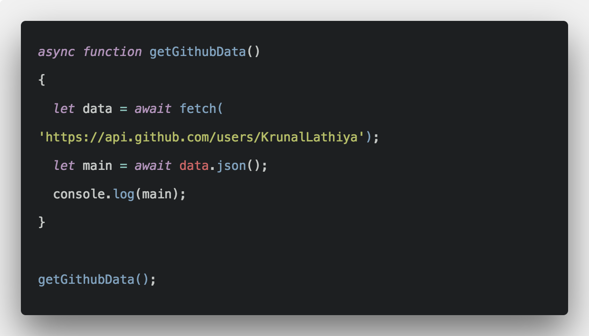

In this exercise I want you to learn how to interact with external API's. To help you practice I provided you with a small local API you can find on _shared/api.json.
For now just fetch the entire JSON object from the resource and log it to your console.
Once the REST API of the exercise has been launched you can access it at the same domainname:port that your server resides on (in PhpStorm this is likely localhost:63342, on a apache server this will be localhost:9001). This small API follows the REST precepts, and contains, under the heroes property, data about X-Men. When you click on the button, use the fetch function and following the JSON object, retrieve the list of X-Men and display it in the console.
The technique to fetch data from the server with JavaScript is commonly called Ajax. While there are different syntaxes to make the call, the general theory stays the same.
The most modern approach without using a framework is the fetch function, I recommend using it.
FAQ
What is an API?
API is the acronym for Application Programming Interface, which is a software intermediary that allows two applications to talk to each other, over different servers. Each time you use an app like Facebook, send an instant message, or check the weather on your phone, you're using an API.
And what is a REST API?
A REST API stands for “Representational State Transfer”. It is a way for two computer systems to communicate over HTTP in a similar way to web browsers and servers.
It is a set of rules that developers follow when they create their API. One of these rules states that you should be able to get a piece of data (called a resource) when you link to a specific URL (in our case _shared/api.json).
We will spent more time on this later in the course when you will develop your own REST API, you don't need to understand all the details here yet!
Do I have to use callbacks, Promises or Async/Await?
With fetch() you can choose what approach you like the most, Promise and Async/Await is considered the most modern, but there are no wrong choices here!
Below is some example code with Async/Await, the most modern approach:
What is an JSON object?
JSON stands for JavaScript Object Notation . It is a standard readable file format used primarily to transmit data between a server and a web application. JSON Objects are surrounded by curly braces “{ }” and are written in key/value pairs.
You might have already used in javascript without realising it, when you where creating objects from scratch!
Example:
let dog = {
'breed': 'Golden Retriever',
'age': 6,
'weakness': ['cookies', 'ball'],
'most_popular_villain': 'the Cat'
}